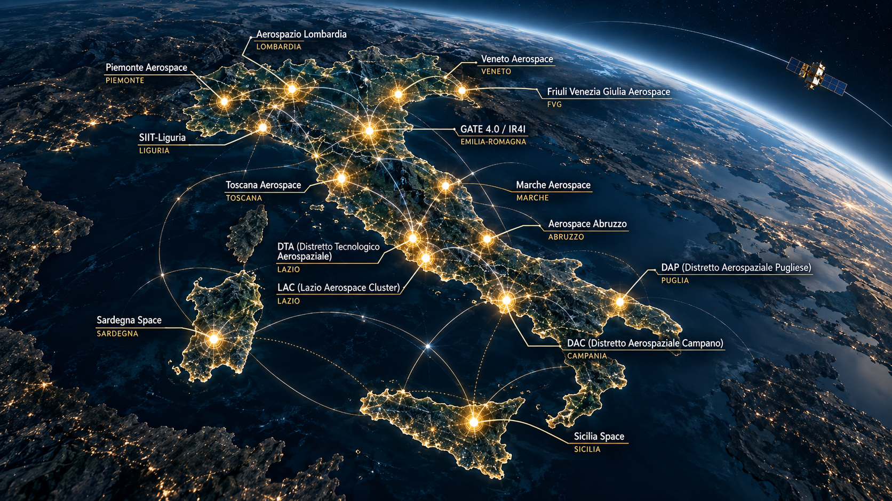

DYNAMES
DYNAMESIntroduzione
L'aerospazio non è un settore industriale come gli altri. È un asset di sovranità tecnologica, un moltiplicatore di capacità difensive, un abilitatore di infrastrutture critiche per le telecomunicazioni, l'osservazione terrestre e la navigazione satellitare. In un contesto geopolitico sempre più competitivo, la capacità di progettare, produrre e lanciare sistemi aerospaziali diventa una questione di sicurezza nazionale tanto quanto di economia avanzata.
L'Italia è il secondo Paese europeo per spesa spaziale pro capite e vanta una filiera completa che va dalla ricerca alla produzione, dai grandi sistemi alle componenti di nicchia. Ma per comprendere davvero il peso strategico del settore, non basta guardare i bilanci di Leonardo o Thales Alenia Space. Serve una mappa territoriale che mostri come l'aerospazio italiano sia un ecosistema diffuso, radicato in oltre dieci regioni, con competenze complementari e vulnerabilità specifiche.
Questa mappa non è solo descrittiva. È uno strumento per policy maker, investitori e operatori del settore che serve a capire dove si genera valore, dove si concentrano le competenze, dove si annidano le dipendenze estere e dove intervenire per consolidare la sovranità tecnologica nazionale.
La geografia delle competenze
L'aerospazio italiano non è un blocco monolitico. Ogni regione ha sviluppato, nel corso di decenni, competenze distintive che la rendono più brava in alcune cose rispetto ad altre. Non si tratta solo di dove si trovano gli stabilimenti, ma di sapere quale territorio domina quale segmento della filiera, quale know-how è difficile da replicare altrove e quale ecosistema è più maturo per l'innovazione.
In ogni territorio, le università e i centri di ricerca non sono semplici fornitori di laureati. Sono parte integrante dell'ecosistema produttivo, con laboratori condivisi, programmi di trasferimento tecnologico e competenze che si sedimentano nel tessuto industriale locale.
Piemonte: l'unico distretto a filiera completa
Il Piemonte è, secondo i dati del CTNA, l'unico distretto italiano dotato di una capacità completa di progettazione, costruzione e certificazione di sistemi aeronautici e spaziali complessi, compresa la parte propulsiva.
Torino e la sua cintura ospitano:
- Progettazione integrata: dalla definizione dei requisiti alla certificazione finale.
- Propulsione: Avio Aero (gruppo GE) produce a Rivalta di Torino i motori per i lanciatori Vega e componenti per motori civili e militari.
- Materiali avanzati: compositi, leghe speciali, additive manufacturing.
- Sistemi spaziali: Thales Alenia Space presidia la linea degli habitat e dei moduli pressurizzati, da quelli per la Stazione Spaziale Internazionale fino ai moduli per Artemis e Gateway.
Il rapporto IRES del 2025 indica il Piemonte come il principale cluster nazionale per numero di aziende e fatturato, circa 350 imprese e 7 miliardi di euro. Ma il dato più rilevante non è la dimensione, è la completezza. Nessun altro distretto italiano può dire di coprire l'intera filiera, dall'ingegneria alla produzione, dai test al lancio.
Il Politecnico di Torino è parte organica di questo ecosistema. Non è solo un'università che forma ingegneri, è un attore industriale a tutti gli effetti con laboratori condivisi con le aziende, programmi di dottorato industriale e centri di ricerca su propulsione avanzata e materiali compositi. Il trasferimento tecnologico non è un'attività accessoria, è il cuore del modello.
Campania: aerostrutture e integrazione sui programmi internazionali
La Campania ha l'indice di specializzazione aerospaziale più alto d'Italia, 3,1 secondo SACE, il che significa che la concentrazione di addetti al settore rispetto al totale regionale è oltre tre volte la media nazionale. Non è solo una questione di numeri, è una questione di posizionamento.
Napoli, Pomigliano d'Arco e Nola sono il cuore di un ecosistema specializzato in:
- Aerostrutture in composito: fusoliere, sezioni di fusoliera, componenti per Airbus e Boeing.
- Integrazione di sistemi: assemblaggio finale di moduli per programmi internazionali.
- Materiali avanzati: ricerca su compositi termoresistenti e strutture leggere per il risparmio di carburante.
Leonardo ha qui uno dei suoi siti più grandi, ma la forza del territorio sta nella filiera di PMI che riforniscono il grande player. Nel 2025 è nato il Sistema Industriale Spazio Sud, un network che unisce PMI e startup campane e del Mezzogiorno per consolidare la filiera locale e attrarre investimenti.
L'Università Federico II è il perno della ricerca locale. Il dipartimento di Ingegneria Aerospaziale collabora con Leonardo e Thales su programmi di ricerca applicata, con laboratori condivisi su materiali compositi, strutture intelligenti e space economy. Il trasferimento tecnologico non è un'attività marginale, è parte del DNA del territorio.
Lazio: sistemi spaziali, difesa e integrazione istituzionale
Il Lazio non è il territorio più specializzato in termini percentuali, indice 2,0, ma è il più grande per massa critica con oltre 8.000 addetti. È sede di ASI, Leonardo con il quartier generale e le divisioni Sistemi di Difesa, Elicotteri e Velivoli, e Thales Alenia Space. La caratteristica del Lazio non è la specializzazione produttiva, è l'integrazione.
Roma e la sua area metropolitana concentrano:
- Sistemi spaziali complessi: satelliti per osservazione terrestre come COSMO-SkyMed, telecomunicazioni, navigazione.
- Difesa: sistemi radar, missilistica, elettronica di bordo.
- Avionica e micro-nanosatelliti: un ecosistema di PMI innovative che lavorano su componenti ad alta tecnologia.
- Servizi satellitari: gestione del traffico aereo, monitoraggio ambientale, intelligence.
Il Lazio è il baricentro decisionale della filiera. Qui si prendono le decisioni strategiche, si coordinano i programmi europei e si negoziano le partnership internazionali.
Le università romane sono parte di questo ecosistema. La Sapienza ha laboratori condivisi con Leonardo e ASI su sistemi spaziali e difesa, Tor Vergata è un centro di eccellenza per le telecomunicazioni satellitari e lo space law, il CNR presidia la ricerca di base su materiali avanzati e sensoristica. Il trasferimento tecnologico è strutturato, non è un'attività occasionale ma un processo continuo.
Puglia: compositi e aerostrutture per il mercato globale
La Puglia ha un indice di 2,3, terzo in Italia dopo Campania e Piemonte. La peculiarità è chiara: compositi e aerostrutture. Grottaglie, in provincia di Taranto, ospita lo stabilimento Leonardo che produce le sezioni di fusoliera in composito per il Boeing 787 Dreamliner, un prodotto ad alta tecnologia, difficile da replicare e strategico per il programma.
L'ecosistema pugliese si è strutturato attorno a questa competenza:
- Produzione di compositi: fibre di carbonio, resine, processi di cura avanzati.
- Aerostrutture: fusoliere, ali, componenti per elicotteri.
- Manutenzione e MRO: aeroporti di Bari e Brindisi come hub per la manutenzione di velivoli civili e militari.
La vicinanza ai porti adriatici e ionici rende la Puglia anche un hub logistico per l'export verso il Mediterraneo orientale e il Medio Oriente, un vantaggio geografico che si traduce in competitività.
Il Politecnico di Bari è il perno della ricerca locale con laboratori su materiali compositi, processi di produzione avanzati e testing strutturale. La collaborazione con l'industria non è episodica, è strutturata in programmi pluriennali di ricerca applicata.
Lombardia: elicotteri, elettronica e dual use
La Lombardia non ha l'indice di specializzazione più alto, ma è leader nella produzione di sistemi dual use. Nel raggio di pochi chilometri si concentrano grandi, piccole e medie imprese altamente specializzate che, dall'avionica ai materiali, dagli equipaggiamenti alla componentistica, sono in grado di produrre elicotteri, aerei e satelliti avanzati.
Le competenze distintive sono:
- Elicotteri: Leonardo ha qui la divisione Elicotteri con produzione e integrazione di sistemi.
- Elettronica di difesa: radar, sistemi di comunicazione, guerra elettronica.
- Dual use: tecnologie che trovano applicazione sia nel settore militare sia in quello civile, come droni per sorveglianza e agricoltura di precisione o sensori per osservazione terrestre e monitoraggio ambientale.
La Lombardia è anche il territorio con la più alta densità di PMI innovative, oltre 300 aziende specializzate in componentistica di precisione, avionica e materiali compositi. È un ecosistema frammentato ma interconnesso, dove la competizione si traduce in innovazione continua.
Il Politecnico di Milano è parte organica di questo ecosistema con laboratori su materiali avanzati, intelligenza artificiale applicata e propulsione. Il trasferimento tecnologico è strutturato attraverso spin-off, brevetti e programmi di dottorato industriale.

I distretti regionali e il Cluster Tecnologico Nazionale
Oltre alle eccellenze territoriali, l'Italia conta 15 distretti aerospaziali regionali aderenti al Cluster Tecnologico Nazionale Aerospaziale (CTNA), un partenariato pubblico-privato nato nel 2012 per coordinare la filiera, promuovere l'innovazione e facilitare l'accesso ai fondi europei.
| Distretto | Regione | Specializzazione |
|---|---|---|
| DAP (Distretto Aerospaziale Pugliese) | Puglia | Aerostrutture, materiali compositi, manutenzione |
| DAC (Distretto Aerospaziale Campano) | Campania | Spazio, osservazione terrestre, sistemi complessi |
| DTA (Distretto Tecnologico Aerospaziale) | Lazio | Sistemi spaziali, difesa, satelliti |
| LAC (Lazio Aerospace Cluster) | Lazio | Integrazione con DTA, focus su startup e PMI |
| SIIT-Liguria | Liguria | Sistemi navali, droni marittimi, componentistica |
| GATE 4.0 / IR4I | Emilia-Romagna | Propulsione, sistemi di controllo, avionica |
| Aerospazio Lombardia | Lombardia | Elicotteri, elettronica, dual use |
| Piemonte Aerospace | Piemonte | Filiera completa, propulsione, sistemi spaziali |
| Toscana Aerospace | Toscana | Precision manufacturing, testing |
| Sardegna Space | Sardegna | Osservazione terrestre, telecomunicazioni |
| Sicilia Space | Sicilia | Lanci suborbitali, propulsione avanzata |
| Veneto Aerospace | Veneto | Robotica, droni, sistemi autonomi |
| Marche Aerospace | Marche | Componentistica di precisione |
| Aerospace Abruzzo | Abruzzo | Componentistica, materiali |
| Friuli Venezia Giulia Aerospace | FVG | Sistemi di controllo, avionica |
Ogni distretto ha una governance propria, ma coordina le attività con il CTNA per accedere a fondi europei come Horizon Europe e la Space Economy Initiative, e nazionali come il PNRR e il Fondo Nazionale Innovazione.
La forza di questo modello è la specializzazione complementare. Nessun distretto cerca di fare tutto, ma ciascuno eccelle in una nicchia. La debolezza è la frammentazione. Senza un coordinamento forte, il rischio è la duplicazione di sforzi e la competizione interna per le stesse risorse.
L'ecosistema dell'innovazione
Negli ultimi cinque anni, l'Italia ha visto nascere un ecosistema vivace di startup aerospaziali. Molte operano nella Space Economy: satelliti miniaturizzati CubeSat, servizi di lancio, osservazione terrestre, navigazione satellitare e space logistics.
Gli incubatori principali
- ESA BIC Turin (gestito da I3P): oltre 30 startup supportate, 24 milioni di euro di capitali privati raccolti in 4 anni.
- ESA BIC Lazio (gestito da I3P e partner): focus su space tech, dual use, osservazione terrestre.
- BIC Lazio e BIC Campania: incubatori regionali con programmi dedicati allo spazio.
- Polihub (Politecnico di Milano): incubatore con track dedicato allo spazio.
- I3P (Torino): uno dei più attivi in Italia con programmi ESA BIC e Space Fund.
- 2i3T (Torino): incubatore universitario con focus su deep tech e spazio.
Il venture capital
Il capitale di rischio è cruciale per le startup in fase early-stage. Due fondi si distinguono:
- Primo Space Fund: obiettivo di raccolta 80 milioni di euro, investe in spin-off tecnologici e startup della filiera spaziale.
- Galaxia: fondo specializzato in Space Economy, fornisce finanziamenti per la fase iniziale e più critica delle startup.
A questi si aggiungono CDP Venture Capital con programmi dedicati a Deep Tech e Space, e fondi regionali come Lazio Innova e Campania New Steel.
Startup e PMI innovative: dual use e defensetech
Molte startup italiane operano in regime di dual use. Le stesse tecnologie che equipaggiano droni militari o sistemi di sorveglianza trovano applicazione nei settori civili:
- Droni autonomi per sorveglianza dei confini e monitoraggio ambientale.
- Sensori iperspettrali per agricoltura di precisione e ricognizione militare.
- Piattaforme di analisi dati per osservazione terrestre, monitoraggio di infrastrutture critiche e rilevamento di attività illecite.
Nel 2026 sarà avviato un programma specifico dedicato a Defensetech, Space e Dual Use (Call4innovit), a conferma della crescente attenzione del Ministero degli Affari Esteri e della Cooperazione Internazionale.
Infrastrutture strategiche e sicurezza nazionale
L'aerospazio non è solo economia, è sicurezza. Satelliti, sistemi di lancio e centri di controllo a terra sono infrastrutture critiche che, se compromesse, avrebbero impatti su difesa, telecomunicazioni, navigazione e osservazione terrestre. Ma la sicurezza non è solo fisica, è anche digitale. E su questo fronte, l'Italia sta costruendo, pezzo dopo pezzo, un sistema di protezione che fino a pochi anni fa non esisteva.
COSMO-SkyMed: il gioiello strategico
La costellazione COSMO-SkyMed è il più importante asset strategico dell'aerospazio italiano. Quattro satelliti per l'osservazione terrestre in orbita bassa, capaci di acquisire immagini in ogni condizione meteorologica, di giorno e di notte. Il sistema è duale, usato sia per applicazioni civili come monitoraggio ambientale, gestione delle emergenze e agricoltura di precisione, sia militari come ricognizione, intelligence e supporto alle operazioni.
COSMO-SkyMed non è solo un satellite, è un'infrastruttura critica di sicurezza nazionale. I dati che producono alimentano i sistemi di intelligence della Difesa, supportano le operazioni NATO e forniscono informazioni strategiche al governo. Per questo, la protezione di COSMO-SkyMed è una priorità assoluta, non solo contro minacce fisiche come detriti spaziali e attacchi cinetici, ma anche contro minacce digitali come cyberattacchi, intercettazioni e manipolazione dei dati.
Legge 89/2025: la cybersicurezza diventa requisito obbligatorio
Nel 2025, il Parlamento italiano ha approvato la Legge 89/2025, che introduce obblighi specifici di cybersicurezza per il settore spaziale. La norma recepisce la direttiva europea NIS2 e stabilisce che le aziende operanti nel settore spaziale sono considerate infrastrutture critiche strategiche per la sicurezza nazionale ed europea.
Cosa cambia in concreto:
- Autorizzazione alle attività spaziali: la cybersicurezza diventa un requisito obbligatorio per ottenere l'autorizzazione a operare nel settore.
- Resilienza dimostrabile: gli operatori devono dimostrare di garantire resilienza contro cyberattacchi, con meccanismi crittografici, backup, aggiornamenti e patching.
- Test e gestione degli incidenti: prove tecniche, test di sicurezza e gestione strutturata degli incidenti diventano obbligatori.
La Legge 89/2025 non è una norma burocratica, è un cambio di paradigma. Fino al 2024, la cybersicurezza nel settore spaziale era un'attività volontaria, lasciata alla sensibilità delle singole aziende. Dal 2025, è un obbligo di legge. E le sanzioni per chi non si adegua sono pesanti, dalla sospensione dell'autorizzazione alla revoca delle licenze.
Accordo ASI-ACN: la governance della cybersicurezza spaziale
Nell'ottobre 2025, l'Agenzia Spaziale Italiana (ASI) e l'Agenzia per la Cybersicurezza Nazionale (ACN) hanno firmato un accordo quadro per rafforzare la protezione delle infrastrutture e dei dati del comparto spaziale. L'accordo non è una semplice intesa di principio, è un piano operativo con obiettivi concreti.
Gli obiettivi principali sono:
- Definizione della governance nazionale della cybersicurezza per il settore spaziale e aerospaziale.
- Sviluppo di soluzioni avanzate: crittografia quantum-resistant, metodologie zero trust, architetture resilienti.
- Esercitazioni e campagne di sensibilizzazione: simulazioni di cyberattacchi, formazione del personale e diffusione della cultura della cybersicurezza.
L'accordo si inserisce nel quadro più ampio della Strategia nazionale di cybersicurezza, di cui rappresenta un'evoluzione: dal principio di difesa passiva alla costruzione di un ecosistema di resilienza proattiva per un settore che sostiene servizi essenziali come comunicazioni, osservazione della Terra, energia e difesa.
Golden Power: 7 interventi su difesa e aerospace nel 2025
Il Golden Power è lo strumento con cui il governo italiano protegge gli asset strategici da acquisizioni straniere potenzialmente pericolose per la sicurezza nazionale. Nel 2025, secondo lo studio "Golden Power Year in Review 2025" dell'Osservatorio Golden Power, la Presidenza del Consiglio ha esercitato i poteri speciali in 40 casi, di cui 7 nel settore della difesa e dell'aerospazio.
I numeri dicono due cose:
- La difesa e l'aerospazio sono i settori più attenzionati, più del 5G, più dell'energia, più delle telecomunicazioni.
- Cina e Stati Uniti sono i Paesi da cui provengono la maggior parte degli investimenti sottoposti a condizioni o prescrizioni.
Un caso recente, settembre 2026: Mare Group ha acquisito CTMAVIO, una PMI italiana attiva nella progettazione e produzione di componenti in metallo e materiali compositi per il settore aeronautico, spaziale e dei droni. Il governo ha deliberato il non esercizio dei poteri speciali, ritenendo che l'operazione non comporti una minaccia di grave pregiudizio per gli interessi essenziali della difesa e della sicurezza nazionale. Ma il fatto che l'operazione sia stata esaminata dimostra quanto il settore sia sotto osservazione.
La Strategia Nazionale per la Resilienza dei Soggetti Critici
Nel 2025, il governo italiano ha approvato la Strategia Nazionale per la Resilienza dei Soggetti Critici, un documento che individua le infrastrutture essenziali per la sicurezza nazionale e definisce le misure per proteggerle. L'aerospazio è tra i settori prioritari, insieme a energia, trasporti, telecomunicazioni, sanità e acqua.
La Strategia non è solo un documento programmatico, è un piano operativo con scadenze, responsabilità e risorse. Gli obiettivi principali sono:
- Mappatura delle infrastrutture critiche: satelliti, centri di controllo a terra, sistemi di lancio, reti di comunicazione satellitare.
- Valutazione dei rischi: minacce fisiche come detriti spaziali e attacchi cinetici, minacce digitali come cyberattacchi e intercettazioni, minacce ibride come combinazione di fisico e digitale.
- Piani di resilienza: procedure di emergenza, backup, ridondanza e capacità di ripristino rapido.
La Strategia è coordinata dal Dipartimento delle Informazioni per la Sicurezza (DIS) e dall'Agenzia per la Cybersicurezza Nazionale (ACN), con il supporto del Ministero della Difesa e dell'Agenzia Spaziale Italiana.
Il fronte invisibile: perché la cybersicurezza spaziale è diversa
La cybersicurezza spaziale non è come la cybersicurezza terrestre. I satelliti sono sistemi difficili da aggiornare: una volta in orbita, non puoi semplicemente installare una patch. Le comunicazioni satellitari sono vulnerabili a intercettazioni, jamming e spoofing. I centri di controllo a terra sono bersagli ad alto valore per attacchi informatici.
Per questo, la protezione delle infrastrutture spaziali richiede approcci specifici:
- Crittografia end-to-end: protezione dei dati dalla sorgente al destinatario.
- Architetture zero trust: nessun sistema è considerato fidato per default, ogni accesso deve essere verificato.
- Ridondanza e backup: capacità di operare anche in caso di compromissione parziale del sistema.
- Monitoraggio continuo: rilevamento tempestivo di anomalie e attacchi.
L'ACN sta lavorando a linee guida specifiche per il settore spaziale, in collaborazione con ASI, il Ministero della Difesa e le aziende del settore. Le linee guida saranno obbligatorie per le infrastrutture critiche e raccomandate per le altre.
Conclusioni strategiche
La mappa dell'aerospazio italiano restituisce un'immagine chiara. Il Paese è un hub europeo di primo piano, con una filiera completa e un ecosistema diffuso su tutto il territorio nazionale. Ma la posizione di forza non è automatica, va consolidata con scelte strategiche.
Tre priorità emergono dall'analisi:
- Coordinamento reale, non formale: il CTNA deve diventare un regista operativo, non un coordinatore di facciata. Serve evitare duplicazioni, concentrare le risorse su progetti strategici e creare sinergie tra distretti complementari.
- Protezione attiva delle infrastrutture critiche: satelliti, centri di controllo e sistemi di lancio sono asset di sicurezza nazionale. Servono investimenti strutturali in cybersicurezza, monitoraggio continuo delle dipendenze tecnologiche e golden power mirato alle acquisizioni sensibili.
- Consolidamento delle eccellenze territoriali: ogni territorio ha sviluppato competenze distintive difficili da replicare. La strategia deve essere di presidio e rafforzamento, non di dispersione su troppi fronti.
L'aerospazio italiano non è solo un settore industriale, è un pilastro della sovranità tecnologica nazionale. Leggerlo come ecosistema territoriale è il primo passo per governarlo. Ma la mappa, da sola, non basta: serve la volontà politica di trasformarla in strategia.